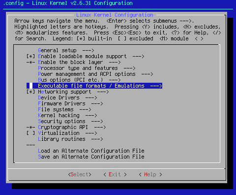
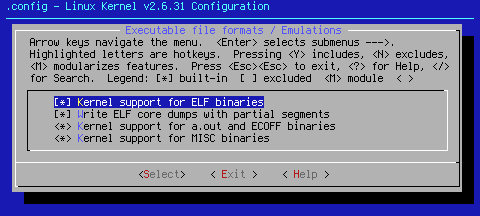
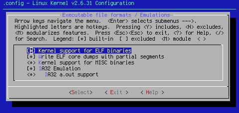

Custom Search
This page will cover Executable file formats / Emulations --->. It's a short page. It allows a small break before the seventh page, [*] Networking support --->, a bit longer page.

Arrow key down to the area shown above. When you hit <Select> at this point, you will bring up one of two pages, depending on whether you're running x86 or x86_64:

x86

x86_64
[*] Kernel support for ELF binaries
Executable and Linkable Format (ELF) is the standard format for executables and libraries for Linux, as well as other operating systems. If you don't check this, your executable files won't execute. Not a good thing. This setting defaults to on, and really should remain that way.
[*] Write ELF core dumps with partial segments
This setting can help in troubleshooting. For that reason, this setting defaults to on.
x86 <*> Kernel support for a.out and ECOFF binaries
A.out is an older form of Linux Executable. While it is unlikely one is going to run across executables from 1995 and older, especially with Gentoo, this setting defaults to on for that odd occasion that might arise once in a blue moon.
<*> Kernel support for MISC binaries
The Linux kernel can actually run many different kinds of executable files. This setting allows that to happen. It allows you to run python, java, and other varieties of executables. Since I want to be able to run anything that Linux can hand me, this setting defaults to on.
x86_64 [*] IA32 Emulation
This setting allows you to run standard x86 32 bit executables. For those running multilib, this is a must. For those running sans multilib, it's probably best if you turn it on as well, just in case. For this reason, this setting defaults to on.
x86_64 <*> IA32 a.out support
This setting allows you to run older 32 bit a.out binaries with an x86_64 kernel. For the blue moon factor discussed above, this setting defaults to on.
End of page 6
Cheers,
Pappy